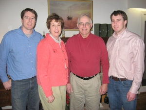

Move your mouse over the blank spaces to see the correct word.
 Two brothers, Jim and John, wanted to make some extra money. They had some ideas but decided to ask _____ parents for more ideas. _____ mother said to _____ father, "_____ good singers. Over _____ across the street is a restaurant. They could sing for _____ supper."
parents for more ideas. _____ mother said to _____ father, "_____ good singers. Over _____ across the street is a restaurant. They could sing for _____ supper."
So the boys went to this restaurant and got a job singing on Saturday nights. The customers liked _____ songs and soon _____ were large crowds. "_____ young but they sing from the heart," people would say. Eventually, _____ boss gave them a raise.
The boys shared _____ money with _____ family. _____ proud parents said to each other, "_____ great!"

Content ©2012. Some Rights Reserved.
Date last modified: January 19, 2012.
Created with SoftChalk LessonBuilder